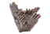

Correspondence Grimoire
Cleansing

RutileSandstoneScoleciteSeraphiniteSerpentineShungiteSillimaniteSmoky QuartzWhat is Magickal Cleansing?
Magickal cleansing spells have little to do with actual cleanliness as defined by the absence of dirt, dust, or disorder, although there are spells that accomplish both kinds of cleaning simultaneously. Even the most slovenly, disorganized witch will maintain a regular schedule of psychic cleansing.
At their most basic, cleansing spells remove psychic and spiritual debris. A certain level of this debris accumulates constantly. As you become more psychically aware, you may become more conscious of this and feel a greater need to remove it on a regular basis.
Cleansings remove low-level spiritual entities that are attracted to ritual, if only to feed parasitically off the generated energy. Knowingly or unknowingly, these entities obstruct and weaken your psychic work, lessening your chances of success. In addition, cleansings welcome and make room for more benevolent, helpful spirits.
When Do You Need to Cleanse?
- Formal rituals begin with cleansings, though it may not be necessary for every quick-fix spell
- Spells and petitions directed toward spirits are the equivalent of inviting an honored guest into your home, spiritual cleansing beforehand is a measure of respect
- Many magick workers perform cleansings on a regular schedule to suit their specific needs, whether daily, weekly, or monthly
- If a room doesn't feel right all of a sudden, or if your dog suddenly refuses to enter a room, this may indicate the need for cleansing rites
- Cleanse any areas that feel oppressive, slightly off, or creepy, let your inner voice guide you
- Any area that has been the scene of violence or a violent emotional altercation needs cleansing
- Areas that are frequently and/or consistently the scene of violence or altercations need extra-strong cleansing, followed by protective rituals
- Cleansings remove any sense of taint, replacing it with purification and sacredness
- If at any level you perceive that magick is inherently evil or bad yet continue to cast spells, your need for cleansings is even greater than most
What Can Be Cleansed?
Areas, people, ritual tools, and other objects may all be cleansed. Various methods and tools of varying intensity exist. This is very personal magick: the results are apparent immediately. You must feel cleansed. Choose the methods that resonate most powerfully for you. Your spells will be most effective and potent if accompanied by visualization, affirmation, and/or the chanting of sacred texts.
Area & Space Cleansing
Any area may be cleansed, from a tabletop altar or the inside of a magickal circle to an entire home or office building. When cleansing a large area, certain spots require extra care and attention:
Anyone actively involved in the space cleansing process or exposed to the cleansing materials automatically receives personal cleansing as well, although certain personal cleansing methods cast a more direct and intensive spell.
Asperging
Asperging means sprinkling with liquid in order to effect spiritual and magickal cleansing. These are ancient rites, just like burning loose incense, they are techniques known to our earliest ancestors. Asperging spells direct the elemental cleansing power of water and other liquids toward a specific area. Depending upon what is used to direct the water, the elemental cleansing power of Earth may also be incorporated through the use of botanicals.
- Use ritual tools or botanicals to asperge
- Use your fingers to flick the water where it's needed
- Weave an asperging wand of cleansing plants: vervain, lavender, hyssop, and rosemary are favorites, this technique can also incorporate knot magick
Asperging is the most popular method of liquid-based space cleansing. It is more discreet than smudging or any smoke-based method. With water-based cleansings, you are able to maintain tighter control over safety and fragrance. For an intensive cleansing ritual, you may wish to combine several methods.
The most basic cleansing liquid is sea salt dissolved into spring or rainwater. The following formulas also provide space cleansing:
- Holy Water
- Florida Water (empowers any other formula to which it's added)
- Indigo Water
- Marie Laveau Water
- Notre Dame Water
- Pollution Water
- Rose of Jericho Water
- Tar Water
- War Water
Disperse through an area. You can intensify the power by combining formulas, for instance, Florida Water and Indigo Water combined, sprinkled through the home daily as maintenance cleansing.
Floorwashes
Floorwashes are an integral component of the Hoodoo and Conjure magickal traditions. They combine actual physical house cleaning with spiritual and magickal work, potent yet discreet, and perhaps the single most effective use of multi-tasking within magick.
Although the liquid is called floorwash, it technically refers to the final rinse used to clean a floor or other interior surfaces. It should not be removed but allowed to air-dry, so that its power radiates into the surrounding atmosphere. The floor should be clean before applying the floorwash. The radiant power of the botanicals is what is crucial, floorwashes are a component of many spells for protection, romance, and space cleansing alike.
Two standard methods:
- Fill a bucket with warm water. Add the magickal infusion together with some white vinegar.
- Create the infusion and pour it into an empty bucket. Pour enough boiling salted water over it to fill the bucket. Add some white vinegar.
Full House Cleansings
Special techniques may be needed to magickally cleanse an entire building. Although many cleansing spells assume that a home is being ritually cleansed, these spells may also be used for workspaces or any other type of building.
Stationary Cleansers
Certain objects act as magickal vacuum cleaners, they absorb malevolence and negativity, removing it from the premises. As a general rule, white foods may be used in this manner.
When the object is full (like a vacuum cleaner bag), it must be removed from the premises and discarded. Crystals are the exception, they can be cleansed and effectively emptied of debris, then reused indefinitely.
Stationary cleansers are typically left unsupervised; if children and/or pets are present, ensure a safe method is used.
Personal Cleansings
Personal cleansings are performed in preparation for rituals and spellwork. They carry an empowering effect, removing accumulated psychic debris that obstructs the full expression of personal power. Many who engage in spiritual work also incorporate regular cleansings into their routine, typically once a week, as general magickal maintenance.
Stronger cleansings are called for in special circumstances: they offer psychic healing following experiences of violence, violation, or humiliation, and can provide meaningful relief even after minor but unpleasant encounters. If you feel tainted or spiritually heavy in any degree, that is your signal. Trust it, and choose the rituals that resonate most strongly with you.
Personal cleansings have a distinct advantage over many other types of spellwork: their effects are felt fairly immediately. A successful cleansing leaves you feeling refreshed, renewed, and genuinely clean.
Many personal cleansings, particularly baths, may be performed alone. Others require one person to cleanse another. This is partly because many of these techniques are survivals of shamanic practice. Shamanic healers offer profound cleansing and soul restoration beyond the scope of household spellwork. These methods have been adapted for personal use, but their roots run deep. Choose your ritual assistants and cleansing partners wisely.
Cleansing Objects and Ritual Tools
Any object may be spiritually cleansed using the various cleansing techniques; just make sure the technique will not harm the object. (Sprinkling Indigo Water on a crystal is fine. If you soak fabric in Indigo Water, on the other hand, it will turn blue.)
- Pass objects through incense smoke
- Fumigate them using a smudge stick
- Asperge with cleansing waters: Holy Water, Marie Laveau Water, and Rose of Jericho Water are particularly effective; choose what suits your purposes best
- Salt water provides a strong cleansing, providing the object will not be damaged by salt
- Singing bowls will cleanse objects as well as areas and individuals
Cleansing Crystals
Crystals and gemstones absorb and store energy. Depending upon how they are used, they may need to be cleansed periodically and re-charged.
- Bury the stone in the ground overnight or longer. This is most potent if done outside, but burying in a flowerpot filled with dirt will work too. Mark the burial spot if you wish to retain the stone.
- Expose the crystal to sunlight and/or moonlight
- Pass the crystal through incense smoke
- Many clear crystals may be cleansed with salt water: collect ocean water or add sea salt to spring water
- Many Charged Waters may be used to cleanse crystals, particularly Florida Water or Notre Dame Water
- Salt may leach color from a vivid crystal or damage a fragile one like moldavite: bathe crystals in spring water with a few drops of Dr. Bach's Rescue Remedy or similar emergency flower remedy formula
Cleansing Crystal Balls
It is crucial that crystal balls and scrying glass are kept cleansed, both physically and spiritually. A dusty crystal ball reveals nothing. A crystal ball covered with negative spiritual debris may reveal distortions.
Cleanse with any of the following:
- A blend of spring water and vinegar
- A charged water: Holy Water, Marie Laveau Water, and Notre Dame Water are particularly recommended
- A water-based herbal infusion made with dried mugwort and/or anise seeds
- Mugwort hydrosol
Add flower essence remedies to any of the above as desired. Mugwort flower essence enhances the crystal ball's powers. Dr. Bach's Rescue Remedy or a similar emergency formula will remove and assimilate disturbing or traumatic visions seen within.
Salt Cleansing
Salt is the single most powerful and consistent aura cleanser. Sea salt, processed as little as possible, is most powerful, although many magickal traditions, not necessarily Jewish, prefer kosher salt, as it bears the aura of being blessed. However, in extremis, any type of salt is effective.
Personal Fumigation
Personal fumigation means using directed smoke to spiritually cleanse the body and the personal aura. This is also a very ancient method of applying perfume. Perfume literally means "through smoke." For centuries, people stood over burning aromatic materials, wafting it strategically, hoping to permeate skin, hair, and clothing with healing, protective, or seductive fragrances.
Most purifying botanicals also possess a protective aspect. Depending upon which botanicals are used, there may also be a sensual component. Sandalwood and frankincense, for instance, are luxurious, fragrant, and aphrodisiac substances as well as powerful cleansers. Cleansings can be sensual rather than medicinal and still be very effective.
In ascending order of strength:
- Have someone else cleanse you with a smudge stick or directed smoke. White sage, desert sage, frankincense, and benzoin resin are particularly effective.
- Place the incense burner on the ground and straddle it, directing the smoke upwards around the body. Kneel down and direct it over your head. You need greater quantities of botanicals for this to be truly effective.
- Burn the incense in a small, closed room such as a bathroom. After the room is permeated with the smoke, get undressed and enter the room so that you can bathe in the smoke.
Animal Allies for Cleansing
Scavengers, especially vultures, are the ultimate animal allies of cleansing. Other magickal scavengers include crows, jackals, and coyotes. Incorporate them into your spells or attempt to establish a magickal alliance if spiritual cleansing is a major issue for you.
Spirits affiliated with vultures include Mut and Oshun. Non-scavenger animals affiliated with spiritual cleansing include deer and doves.